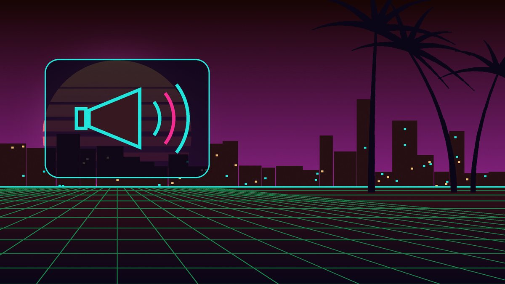

GTA 6 no tendrá modo de 60 fps: Rockstar lo descarta también en PS5 Pro
Los análisis apenas encuentran fallos, pero el juego va a 30 imágenes por segundo en todas las consolas y ningún parche lo va a cambiar.
Por Redacción Golpe Diario · Publicado el · Actualizado el

Qué ha pasado
Rockstar no habilitará un modo de 60 imágenes por segundo en GTA 6, ni siquiera en PS5 Pro. Engadget cuenta que la compañía se lo confirmó a Kotaku: tampoco habrá modo de 40 fps en ninguna consola de lanzamiento, y no conviene esperarlo en futuros parches de las consolas actuales. Marc Chambers, director de producción de tecnología del estudio, explica que el procesador de la PS5 Pro no tiene potencia suficiente para mover la compleja simulación del juego a más fps.
Engadget añade un detalle práctico: quitar el trazado de rayos tampoco liberaría un modo de 60, porque el cuello de botella es el procesador, que ya va al límite. El de la PS5 Pro es solo algo más rápido que el de la PS5 normal, así que el tope de 30 fps se mantiene. Lo que aporta su GPU son sombras con trazado de rayos y una imagen más nítida gracias al reescalado.
Sobre cómo se ve y rinde, Engadget recoge el análisis de Digital Foundry: las dos PS5 renderizan a 1440p; la Pro reescala a casi 4K con PSSR y la normal se ve más blanda; la Pro mantiene 30 fps bloqueados, y la normal los sostiene casi siempre, con bajadas a mediados de los 20 en secuencias largas con muchas explosiones.
Push Square, que probó solo la PS5 Pro durante más de 150 horas, apenas vio ralentizaciones, ni siquiera al volar en reactor o al conducir rápido por autopista. Su autor aclara que no probó la PS5 normal. En cuanto a fallos, games.gg jugó 65 horas en PS5 Pro y solo anotó dos, los dos menores: objetos que se quedan flotando sobre el suelo y algún bajón por debajo de 30 fps en escenas con mucha actividad. No hubo cuelgues ni errores que rompan la partida. Rockstar ya los conocía y trabajaba en ellos antes del lanzamiento, aunque games.gg no promete que haya parche el primer día.
Quedan dos incógnitas. Rockstar no ha anunciado versión de PC, aunque Engadget cree que acabará llegando, como ha pasado con otros GTA. Y games.gg advierte de que sus observaciones son de PS5 Pro y no deben leerse como resultados de Xbox Series X|S, de las que estas fuentes no dan datos de rendimiento.
Qué significa para ti
- Si esperabas jugar a 60 fps, no va a pasar en las consolas actuales, ni con parches.
- Con una PS5 Pro la imagen es más nítida y los 30 fps van estables; en la PS5 normal, según Digital Foundry a través de Engadget, hay bajadas puntuales a los 20 y pico.
- Los dos fallos que ha anotado games.gg son menores y no rompen la partida: objetos flotando y algún bajón de fps.
- En Xbox Series X|S no hay todavía datos fiables en estas fuentes: espera a un análisis específico antes de comparar.
Lo tienes también en la guía: Primeros pasos en GTA 6: lo que conviene saber antes de empezar · Ajustes recomendados de GTA 6: imagen, mando, apuntado, cámara y sonido
Contrastado con: Engadget · Push Square · games.gg
Sigue leyendo
Rockstar explica cómo ha construido a cada vecino de Leonida para que no parezca un maniquí
Una entrevista de IGN a varios responsables de Rockstar North, recogida por otros medios especializados, destapa el trabajo que hay detrás de la gente que se cruza por la calle en GTA 6: más animaciones que en cualquier otro juego de la saga, un equipo dedicado solo a sus vidas y una norma que obliga a cada uno a tener su propia historia, aunque el jugador no la vea nunca entera.
Keith Richards se hace DJ de blues en GTA 6, junto a Buddy Guy
El guitarrista de los Rolling Stones presenta su propia emisora dentro del juego, Gloriana Blues Radio, en compañía de la leyenda del blues Buddy Guy, y pone de su cosecha una versión de un clásico de Jimmy Reed.
Sam Houser habla en el estreno de GTA 6: «hemos intentado crear una experiencia que supere vuestras expectativas»
El presidente y cofundador de Rockstar, que casi nunca da declaraciones, mandó un texto a un medio mientras el juego se desbloqueaba por regiones. Resumimos lo que dice, con sus frases más claras citadas y atribuidas, y lo único que deja claro sobre el final de la historia.